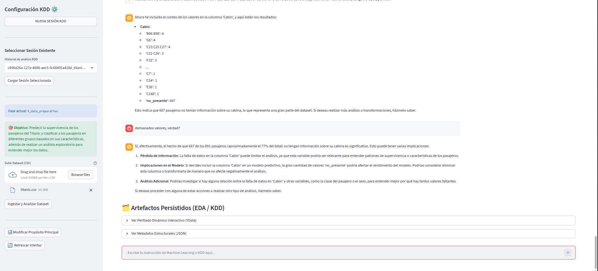
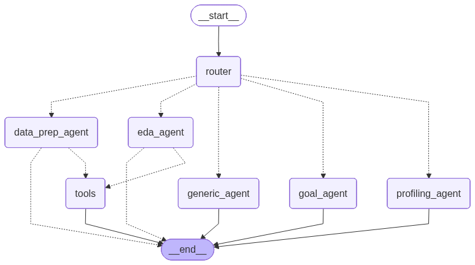

MCP AI Data Agent (Conversational KDD)




About the Project
A conversational system acting as an analytical copilot that guides the user through the entire Knowledge Discovery in Databases (KDD) process. It operates as a methodological facilitator and workflow orchestrator through natural language, running automated analysis and generating interactive dashboards summarizing insights and machine learning models.
Key Features
- Multi-Agent Orquestration: LangGraph-based state machine that conditionally routes conversations between generalist and specialist agents (EDA, Data Prep MLOps, Modeler).
- MCP Universal Connectivity: Fully exposed as an MCP (Model Context Protocol) Server, allowing any compatible corporate AI ecosystem (like Claude Desktop or Cursor) to plug into the KDD engine as a delegable specialist tool.
- Isolated Code Execution: Agents delegate Python analysis to an ephemeral Docker Sandbox, ensuring perfectly safe, stateless code execution.
- Data Artifact Lineage: Persistent storage of datasets, generated charts, and models using MinIO (S3), dynamically linked back to the application state to assemble final reports interactively via LLM.
Technical Architecture
Powered by a dual-backend architecture: an async FastAPI server orchestrating LangGraph state and Memory saving, bridged to a Streamlit UI for human experts. All untrusted executions occur within a secure Docker container, with artifacts flowing into MinIO objects storage.